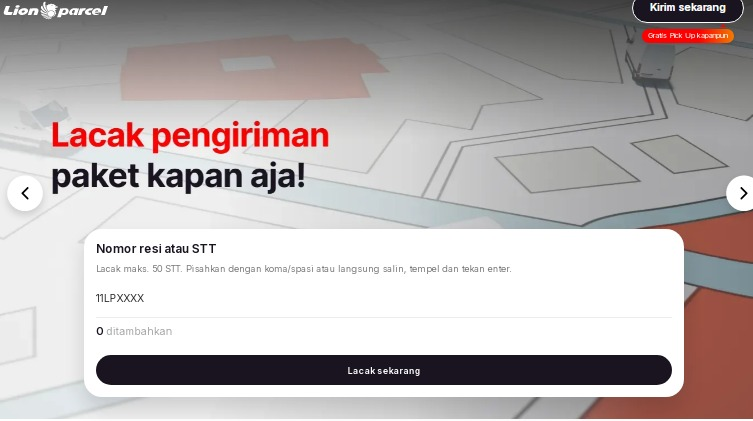

Cara Cek Resi Lion Parcel & Lacak Posisi Paket dengan Mudah

Menunggu paket pesanan belanja online atau kiriman penting tentu membuat kita penasaran di mana posisi barang tersebut saat ini. Bagi Anda yang menggunakan layanan pengiriman Lion Parcel, proses melacak paket sangatlah mudah dan bisa dilakukan secara mandiri dari HP Anda kapan saja.
Butuh Bantuan Lacak Paket? Tanya Admin Langsung!
Mengalami kendala saat melacak resi atau paket belum sampai? Hubungi tim Lion Parcel Bandung POS101 Rancaekek untuk dibantu cek status kiriman Anda.
💬 Chat WhatsApp 0851-8309-04861. Langkah-Langkah Cek Resi Lion Parcel Secara Online
Anda bisa memantau pergerakan paket secara real-time dengan mengikuti langkah-langkah praktis berikut:
- Siapkan Nomor Resi (STT): Nomor resi atau STT (Surat Tanda Terima) biasanya tertera di bagian atas bukti pengiriman fisik yang diberikan oleh agen saat Anda melakukan pengiriman, atau dari toko online tempat Anda berbelanja.
- Kunjungi Situs Resmi: Buka browser di HP atau laptop Anda, lalu akses halaman web resmi pelacakan Lion Parcel.
- Masukkan Nomor Resi: Ketik atau salin (paste) nomor resi tersebut ke dalam kolom pencarian/lacak resi yang tersedia di halaman utama.
- Tekan Tombol Lacak: Klik tombol cari/lacak, dan status perjalanan paket Anda akan muncul secara detail beserta riwayat transitnya.
📍 Lokasi Lion Parcel Bandung POS101 Nanjungmekar
Jl. Raya Barat Cicalengka RT 1 RW 1, Nanjung Mekar, Rancaekek, Kabupaten Bandung, Jawa Barat.
2. Kendala Umum Saat Cek Resi dan Solusinya
Terkadang ada beberapa kendala kecil saat Anda mencoba melacak paket. Berikut beberapa tips mengatasinya:
- Nomor Resi Belum Terdeteksi: Jika paket baru saja diserahkan ke agen beberapa jam yang lalu, sistem butuh waktu sinkronisasi data. Coba cek kembali secara berkala dalam beberapa jam ke depan.
- Salah Ketik Nomor: Pastikan tidak ada digit angka atau huruf yang salah atau tertinggal saat Anda memasukkan nomor STT/resi.
- Konsultasi ke Agen Terdekat: Jika paket mengalami keterlambatan dari estimasi waktu normal, Anda bisa langsung menghubungi agen pengirim atau datang langsung ke gerai terdekat.
Kesimpulan
Mengecek resi secara berkala memberikan ketenangan baik bagi pengirim maupun penerima paket. Pastikan Anda selalu menyimpan nomor resi dengan baik. Bagi warga Rancaekek dan sekitarnya yang ingin mengirim paket dengan layanan terpercaya dan mudah dilacak, percayakan pada Lion Parcel Bandung POS101 Nanjungmekar!
Nama Agen: Lion Parcel Bandung POS101 Nanjungmekar Rancaekek
Jam Operasional: Senin–Minggu, 08.00–20.00 WIB
Alamat: Jl. Raya Barat Cicalengka RT 1 RW 1, Nanjung Mekar, Rancaekek, Kabupaten Bandung
WhatsApp: 0851-8309-0486